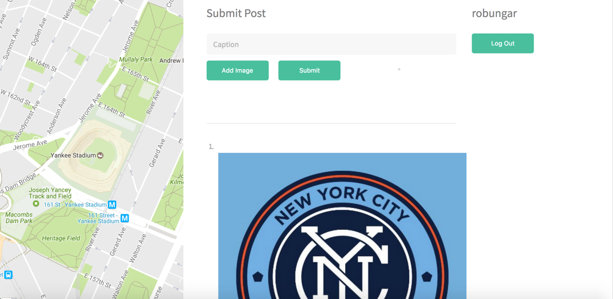

PROJECTS

Twilio Tasks allows a user to send a task to the application via a text message. Other users can then reply to a posted task and offer to complete it for the original poster. The reply is both posted to the application and also sent via text message back to the user who created the task.
Technologies Used: Node.js, Express, Mongo, Mongoose, React, React Router, Redux, Superagent, Babel, Bluebird, Bcryptjs, Gulp, JsonWebToken, Webpack
Services/APIs Used: Twilio, Heroku, Github

Snapshot allows a user to upload an image with a caption to the application and then mark its location on a map. The app then shows all images that have been added to the map and changes as the user drags the map window around.
Technologies Used: Node.js, Express, Mongo, Mongoose, React, React Router, Redux, Superagent, Dropzone, Babel, Bluebird, Bcrypt, Gulp, Webpack
Services/APIs Used: Google Maps, Cloudinary, Heroku, Github
SKILLS
- User account/profiles
- Google Maps integration
- Image uploading
- JSON parsing of APIs, such as Instagram, Twitter, Yelp
- Twilio Integration